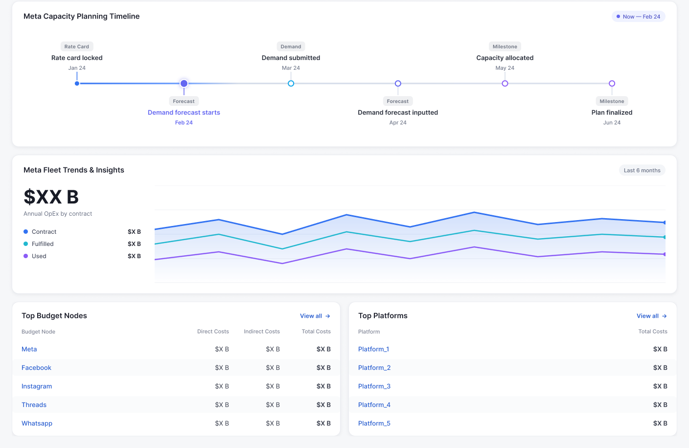

Quiet — flat #241d3d, dots at .05, no pool. Maximum separation.
Slice: Landing Page artboard 397:2, cropped y 642–1560 (1408×918). Every cover below renders at its true 590×442 — judge it at this size, not zoomed.
Shown in the real case study row so the cover is judged against the copy beside it. Ground is held constant; only the slice's geometry changes.

Turning complex, massive-scale compute allocation into intuitive, future-proof ecosystems to keep up with the AI-led capacity demand.
Turning complex, massive-scale compute allocation into intuitive, future-proof ecosystems to keep up with the AI-led capacity demand.
Turning complex, massive-scale compute allocation into intuitive, future-proof ecosystems to keep up with the AI-led capacity demand.
Geometry held at B. The question is how hard the white cards separate from the plum — too little and they glare, too much and the slice looks pasted on.
.csimg does not currently bleed off the page edge in v15 —
.worklist is a plain centred 1180px with no negative margin, so these render as
clean boxes.